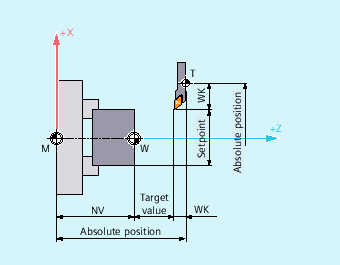

The path calculation determines the distance to be traversed in a block, taking into account all offsets and compensations.
In general:
Path = setpoint - actual value + zero offset (ZO) + tool offset (TO)
If a new zero offset and a new tool offset are programmed in a new program block, the following applies:
With absolute dimensioning:
Path = (absolute dimension P2 - absolute dimension P1) + (WO P2 - WO P1) + (TO P2 - TO P1).
With incremental dimensioning:
Path = incremental dimension + (WO P2 - WO P1) + (TO P2 - TO P1).